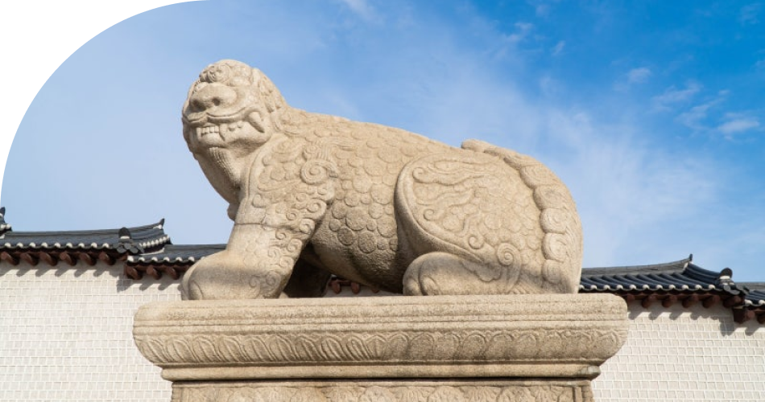

해태라는 말은 중국의 해치라는 말에서 유래된 것이다.
중국의 고서인 이물지(異物誌)에 의하면 “해태”의 모습은 양과 비슷하게 생겼고 뿔이 한 개 돋아 있으며,
그 성질은 충직(忠直)하고 옳고 그름을 능히 구별할 줄알아 사람들이 다투고 있을 때에는 옳지 못한 자를 가려내어
그를 해쳤다고 기록되어 있다. 그래서 고대중국에서는 법관의 의복에 해태의 모습을 장식했다고 하며,
법관이 쓰는 관을 “해치관”이라 불렀다고 한다.
우리나라의 조선시대에도 재상이나 높은 관직에 있는 사람은 광화문 해태상의 꼬리에 손을 얹어
마음을 바로잡는 풍속이 있었다.또한 조선시대 말 흥선 대원군이 경복궁을 재건할 때 잦은 화재로 공사가
지연되자 남쪽의 관악산이 휴화산인 이유로 그 불기가 빌미가 된다는 지관의 주장에 따라 광화문의 좌우에
해태상을 설치하여 화재를 막고 길운을 빌었다고 한다.